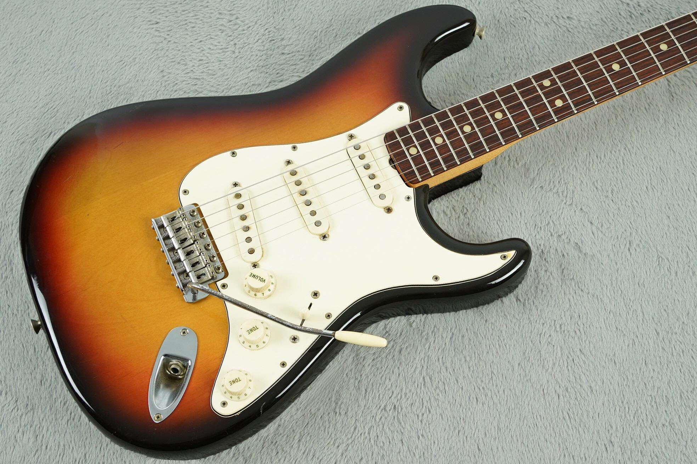

Desarrollo Web
Actualmente estoy estudiando para ser un desarrollador full-stack; tengo experiencia en múltiples proyectos donde he usado HTML, CSS, PHP y JavaScript.
- Algunos Proyectos Destacados: Khaos Doom - Pet ID
Hola, mi nombre es Eric Nachtygal, y este sitio es mi portafolio. Esta página es un resumen breve sobre mis capacidades, y un poco de información de mí. Puede contactarme a través de la página de Contacto, y observar mis proyectos anteriores en la página Proyectos.
Actualmente estoy estudiando para ser un desarrollador full-stack; tengo experiencia en múltiples proyectos donde he usado HTML, CSS, PHP y JavaScript.
Estudié por un año entero como crear aplicaciones que corren en la consola de Windows utilizando C#; en mis proyectos destacados tengo miles de líneas de código.
He desarrollado múltiples juegos en distintos entornos de desarrollo, tales como los motores Godot, Construct, e incluso sin un motor de videojuegos utilizando JavaScript.

Mi nombre completo es Eric Esteban Nachtygal, actualmente tengo 17 años y estoy estudiando programación en el Instituto Técnico La Falda.
Soy una persona cristiana, y considero que mi religión me impulsa a trabajar mejor en equipo y esforzarme a la hora de trabajar.

Entre mis hobbies, están la música, el dibujo, la programación, los videojuegos y la escritura.
Entre todos, mi hobbie favorito es la música (por eso mismo yo cree la música usada en algunos de mis proyectos).
En el Instituto Técnico La Falda, estoy estudiando programación para recibir un título de desarrollador full-stack (es decir, back-end, front-end y bases de datos).
En un par de años, me gustaría estudiar la carrera "Licenciatura en Ciencias de la Computación" en la Universidad Nacional de Córdoba.